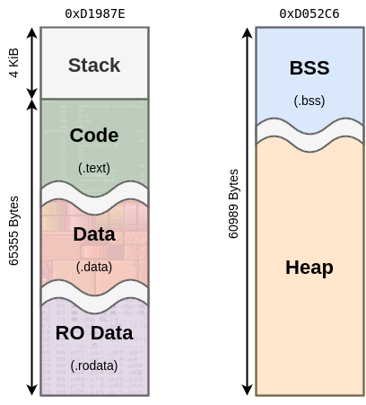

Frequently Asked Questions
I Found A Bug, Help!?
Nice work, now create an issue report here with details on what caused the crash. Uploading a zip of your code and/or a minimal reproducible example is very appreciated (and is usually required).
What versions of C/C++ are supported?
The CE Toolchain supports the latest LLVM/Clang toolchain, and the status of each language can be found at the respective links: C, C++
What is the C/C++ Runtime Memory Layout?
The CE has a limited amount of memory.
The stack is roughly 4KiB.
The code/data/rodata sections can be up to 64KiB.
The bss/heap occupy a shared 60KiB region of memory and grow into each other.
The following graphic breaks down the address space.
How can I use fasmg on a non-x86 processor?
Fasmg is a macro assembler used for assembling and linking project source files. The project is written in x86 assembly, which means it cannot be run directly on non-x86 processors (such as ARM). To mitigate this, the QEMU project can be used to emulate the x86 processor in user-mode so that it can be used directly. If you use a Debian-based system such as Ubuntu or Linux Mint, you can install QEMU using the following command:
sudo apt install qemu-user
Next, open the file CEdev/meta/makefile.mk in the toolchain install directory and locate the following line:
FASMG = $(call NATIVEPATH,$(BIN)/fasmg)
Add the text “qemu-x86_64” directly after the equal sign, shown below. Now, fasmg will execute in user mode under QEMU, allowing it to successfully complete the assembly and linking steps.
FASMG = qemu-x86_64 $(call NATIVEPATH,$(BIN)/fasmg)
Linking Assembly Source Files
Assembly routines can be linked into a C/C++ program provided the following conditions are met:
The file’s extension is .asm. It can be placed at any depth in the sources directory.
The appropriate section is declared - either
.textfor code,.datafor initialized data, or.rodatafor read-only data. This is done using the section keyword, whereby everything after the keyword will be added to the defined section.The assembly routine must be prefixed with an underscore, and have a corresponding public entry in the assembly file.
Any external functions called from the assembly source must be listed as being extern.
A separate header file should define a C/C++ prototype for the function if it is called from C/C++ code.
Below is an example C prototype followed by the assembly implementation:
void asm_func(int arg);
assume adl=1
section .text
public _asm_func
_asm_func:
pop hl
pop de
push de ; de = arg
push hl
call _external_func
ret
extern _external_func
Arguments
Arguments are pushed from last to first corresponding to the C prototype. In eZ80, 3 bytes are always pushed to the stack regardless of the actual size. However, the assembly function must be careful to only use the valid bytes that are pushed. For example, if a short type is used, the upper byte of the value pushed on the stack will contain arbitrary data. This table lists the locations relative to sp from within the called funciton.
C Type |
Size |
Stack Location |
|---|---|---|
char |
1 byte |
sp + [3] |
short |
2 bytes |
sp + [3:4] |
int |
3 bytes |
sp + [3:5] |
long |
4 bytes |
sp + [6]: sp + [3:5] |
float |
4 bytes |
sp + [6]: sp + [3:5] |
double |
4 bytes |
sp + [6]: sp + [3:5] |
pointer |
3 bytes |
sp + [3:5] |
Returns
This table lists which registers are used for return values. The type’s sign does not affect the registers used, but may affect the value returned.
Note
C Type |
Register |
Register Contents |
|---|---|---|
char |
A |
xx |
short |
HL |
?? xx xx |
int |
HL |
xx xx xx |
long |
E:HL |
xx: xx xx xx |
float |
E:HL |
xx: xx xx xx |
double |
E:HL |
xx: xx xx xx |
pointer |
HL |
xx xx xx |